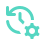
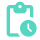
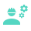

Данные о производственном процессе существуют так или иначе всегда.
Nermyca решает их обособленность, недостаточность, асинхронность, разнородность и объединяет в монолитный контекст.
Nermyca получает необходимые данные через собственный контур сбора или существующие системы предприятия и связывает их с физическими активами, историей, событиями, ремонтами, документацией и знаниями специалистов, чтобы раньше увидеть проблему, понять происходящее и принять обоснованное решение.
От сигнала — к ситуации. От ситуации — к действию.
Насос №17Актив
7,3 мм/сВибрация
+12 °CТемпература
14 мес.История
8 300 чНаработка
SKF 6312Запасная часть
2 специалистаКомпетенции
Предприятие, возможно, даже знает многое. Но каждой из систем известно лишь о себе.
Каждый источник по отдельности решает свою задачу.
Но ни один из них не видит промышленную ситуацию целиком.
Когда состояние конкретной машины начинает меняться,
инженеру приходится вручную сопоставлять показания,
историю эксплуатации и ремонтов, наработку, документацию,
наличие запасных частей и опыт специалистов.
В центре Nermyca — не оборудование и не датчик.
В центре Nermyca — реальный производственный процесс и всё, что с ним происходит.
Nermyca связывает разрозненные сведения вокруг физических
активов предприятия — так отдельные сигналы, записи и факты
становятся единой промышленной ситуацией.
Некоторые данные уже есть. Некоторые появляются сейчас.
Nermyca связывает их в единый промышленный контекст.
03:17 Насос №17 ещё работает.
Аварийного порога ещё нет. Производство продолжается. Но Nermyca замечает постепенный рост вибрации и температуры подшипникового узла.
Сигналы становятся событием
Рост температуры и изменение характера вибрации рассматриваются вместе — в контексте одного физического актива.
Поднимается история
Похожее сочетание признаков наблюдалось 14 месяцев назад. Последующий осмотр тогда выявил износ подшипника.

Добавляется контекст эксплуатации
После последней замены узел отработал 8 300 часов. Система знает историю ремонта, установленную деталь и результаты последующих проверок.

Подключаются знания
Документация и накопленный опыт предприятия указывают на необходимость проверки подшипникового узла.
Ситуация превращается в действие
Nermyca связывает ситуацию с нужной документацией, запасной частью и специалистами, обладающими подходящими компетенциями.

Насос ещё работает.
Но проблема уже выявлена, а дальнейшие действия определены.
Мониторинг лишь собирает и отображает данные.
Nermyca объясняет их в контексте производственного
процесса.
SCADA / мониторингЧто происходит сейчас?
ТОиРЧто и когда обслуживать?
ERPКакие есть ресурсы?
ДокументацияКак это должно работать?
База знанийЧто мы об этом знаем?
NERMYCAЧто означает происходящее и как действовать дальше?
Есть инфраструктура?
Nermyca встраивается в существующий цифровой контур и связывает данные SCADA, АСУ ТП, ТОиР, ERP, ПЛК и других систем с физическим миром оборудования.
Её нет?
Nermyca создаёт собственный контур сбора данных, мониторинга, событий, процессов и знаний — без требования сначала «оцифровать производство заново».
Есть инфраструктура — Nermyca её объединит и дополнит.
Нет — поможет построить.
Объект анализа — не датчик, а промышленная ситуация.
Состояние
Измерения, параметры, режимы работы.
История
Эксплуатация, неисправности, изменения.
Обслуживание
Осмотры, ремонты, замены, профилактика.
Связи
Узлы, агрегаты и технологические зависимости.
Документация
Регламенты, инструкции, технические сведения.
Знания
Диагнозы, найденные причины, нюансы, успешные решения.
Люди
Компетенции, экспертиза и опыт специалистов.
Ресурсы
Необходимые детали и материалы.
Сегодняшний ремонт становится знанием для завтрашней диагностики.
Актив
Реальный объект: оборудование, датчик, система или человек.
Событие
Значимое изменение состояния и его связи.
Процесс
Диагностика, проверка, обслуживание, ремонт.
Решение
Контекст даёт человеку основание действовать.
Старое оборудование тоже имеет право говорить.
Не обязательно менять оборудование, чтобы начать его понимать. Octopus — проектируемый универсальный полевой узел Nermyca для подключения датчиков к существующему парку машин.
- унифицированные физические порты
- автоматическое определение подключённого датчика
- идентичность, калибровка и история каждого датчика
- Wi‑Fi, Ethernet/PoE, LoRa и предусмотренные промышленные каналы
ВибрацияТемператураТокДавлениеОбороты
OCTOPUSузел сбора данных
→
NERMYCAсвязанный контекст
Nermyca работает и с тем, что уже умеет говорить.
ПЛК / SCADAModbus · OPC UA · S7 · EtherNet/IP
IoT / шлюзыMQTT
ДатчикиOctopus
→
NERMYCAединый промышленный контекст
Octopus расширяет цифровой контур предприятия, а не заменяет существующий.
Инженеры уходят. Оборудование меняется.
Опыт не должен исчезать.
Проблема→Диагностика→Причина→Действие→Результат→Знание
Nermyca превращает результаты диагностики, ремонтов и инженерных решений в связанную историю оборудования.
Знания предприятия остаются на предприятии.
Nermyca рассчитана на локальное развёртывание внутри инфраструктуры предприятия. Производственная телеметрия, история оборудования, документация и инженерные знания не требуют передачи во внешние облачные ИИ‑сервисы.
Не презентация.
Работающая фабрика.
Для разработки и демонстрации уже создана программная модель промышленного цеха с оборудованием, датчиками и реальными промышленными протоколами.
Нормальная работа→Деградация→Предаварийные
признаки→Отказ→Диагностика→Обслуживание→Восстановление
Не замена существующей инфраструктуры.
Новый уровень понимания того, что уже происходит на предприятии.
Не ещё один экран с графиками
Данные должны приводить к пониманию ситуации.
Не ещё одна изолированная система
Nermyca может встроиться в существующую инфраструктуру или создать необходимый контур сама.
Не только новое оборудование
Octopus включает в цифровой контур существующий парк.
Не только телеметрия
История, ремонты, документы и знания участвуют в понимании ситуации.
Не облачная чёрная коробка
Промышленный контекст остаётся внутри предприятия.
Не знания одного инженера
Успешное решение становится частью памяти организации.
Nermyca уже работает как система.
Ядро платформы
Модель активов, наблюдений, событий, процессов, знаний и компетенций.
Промышленная интеграция
Адаптеры протоколов и обработка телеметрии.
Виртуальная фабрика
Полноценный стенд для воспроизводимых сценариев.
Octopus
Пилотная аппаратная платформа.
Промышленный демонстратор
Связная демонстрация полного цикла.
Пилот на предприятии
Проверка на реальном производстве.
Следующий этап Nermyca — реальное производство.
Мы развиваем промышленный демонстратор и открыты к разговору с предприятиями, технологическими партнёрами и инвесторами.